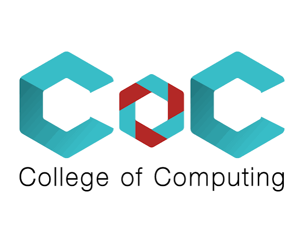

Built for real attackers, not scripted demos. HydraPoT intelligently routes every command to the right execution engine, preserving realistic behavior throughout the entire attack session.
Every keystroke flows through the Honey Router, which classifies the command by mechanism and dispatches it to the right agent. Separately, the FI Manager scores each command for impact and manages the LLM's context window, all in under 500 ms for routine commands.
HydraPoT routes every command to the cheapest agent that can still fool the attacker, spending zero cloud credits on simple recon and saving GPT-4o mini power for when it actually matters.
The Honey Router picks the cheapest agent that can still produce a believable response, saving 97% of cloud spend. Cowrie handles routine recon. LLMs take over when context and creativity are the only thing keeping the session convincing.
Every command receives an FI score between 0 and 4. The score determines what stays in memory and what gets logged. It never affects routing. A separate rule-based classifier selects the appropriate execution engine, while high-impact commands are preserved longer than routine reconnaissance.
ls, whoami, cat, pwd
touch, mkdir, wget
chmod, rm, cd, echo > file
sudo, systemctl, curl | bash, nmap
passwd, rm -rf /, useradd, chmod 777
Retention = (0.7 × FI_weight) + (0.3 × Recency_weight) FI_weight = fi / 4 Recency_weight = 1 / (1 + age_min)
When the FI ≥ 2 buffer hits 10 events, the row with the lowest retention is dropped. High-FI commands survive longer: recent recon falls off first, dangerous calls stick around as context.
Make HydraPoT your own. Add a YAML file to rules/ and customize responses, FI weights, routing rules, and alert thresholds instantly. No coding. No redeployment
{{variables}}, or point to a file. Injected verbatim into the shell session.alert: and every match fires an enriched event straight to your pipeline..yaml into rules/ while the honeypot is live. It picks it up on the next command: no restart, no dropped sessions.Toggle agents on or off, remap which FI level routes where, tune the logging threshold. The config on the left updates live as you click.
One interactive wizard configures every detail: hostname, LLM, credentials, SIEM endpoint. No YAML hand-editing, no guesswork. Your honeypot is live before your coffee gets cold.
hp inithp run, donePick any session from the list and investigate it instantly: timestamped, FI-scored, and agent-tagged, command by command. Built for SOC analysts who need answers fast.
HydraPoT ships with a built-in SIEM-grade dashboard, purpose-built for SOC teams who need attacker intelligence, not just logs. One platform to capture, classify, correlate, and act.

FI-routed sessions bounce between Cowrie, the on-device model, and the cloud model mid-conversation. Without shared context, each agent forgets what the attacker just did. We measured how often the reader agent correctly recalled state the creator agent had set, comparing our cross-agent session memory on vs. off.
| Creator Agent | Reader Agent | SRoff (%) | SRon (%) | Δ (pp) |
|---|---|---|---|---|
| Cowrie | Cloud | 35.53 | 100.00 | +64.47 |
| On-device | Cloud | 35.53 | 100.00 | +64.47 |
| On-device | On-device | 22.37 | 89.47 | +67.10 |
| Cloud | Cloud | 36.84 | 97.37 | +60.53 |
| Cowrie | On-device | 21.05 | 80.26 | +59.21 |
| Cloud | On-device | 22.37 | 77.63 | +55.26 |
| Cowrie | Cowrie | 55.26 | 55.26 | +0.00 |
| Arm | BERTScore F1 | Cosine | Sequence | Levenshtein | Jaro-Winkler | BLEU | Exact match |
|---|---|---|---|---|---|---|---|
| Pure Cowrie | 0.720 | 0.775 | 0.790 | 0.775 | 0.854 | 0.713 | 67.8% |
| Pure On-device LLM | 0.761 | 0.790 | 0.803 | 0.789 | 0.870 | 0.725 | 69.5% |
| Pure Cloud LLM | 0.753 | 0.796 | 0.799 | 0.787 | 0.870 | 0.729 | 70.0% |
| HydraPoT | 0.757 | 0.796 | 0.803 | 0.789 | 0.869 | 0.727 | 69.4% |
HydraPoT ships with sensible defaults and gets out of the way. Point it at your existing SIEM, swap in any HuggingFace model, and the rest wires up automatically.
HYDRAPOT_SIEM_ENDPOINT=http://splunk:8088/services/collector \ python main.py
ONDEVICE_MODEL=microsoft/Phi-3-mini-4k-instruct \ python main.py
Deploy in minutes. Attackers get a convincing Linux box. You get structured threat intelligence.
$ git clone https://github.com/Kamolchanok-Saengtong/HydraPoT $ pip install -r requirements.txt $ python main.py